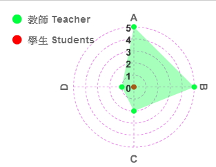

- 學年/學期 Academic Year/Semester
- 103 學年 第 2 學期
- 課程名稱 Course Name 504031-022
- (中 Ch.)中級俄語
- (英 Eng.)Intermediate Russian
- 授課教師 Instructor
- 柯瓊鎣
- 修別 Type of Credit
- 必修
- 學分數No. of Credits
- 4. 0
- 備註 Note
- N/A
- 課程目標 Course objectives
- 中級俄語的教學目標在於：
- 在日常生活的題材範圍內教授常用的詞語以及句式，發展聽說讀寫的言語能力。
- 配合言語訓練以及語法教學提高外語表達能力，加強課文朗讀訓練。
- 透過閱讀課文，查閱詞典，完成作業等培養獨立學習能力。
- 課程大綱 Course Description
- 本課程以Русский язык для начинающих為主教材，透過主課文加強語言的基本理解能力，口語及書面語的練習，並加強常用詞匯的擴展能力。
- 上課進度 Class Schedule
-
第一週 - 第20課課文：Смелые люди
- 詞匯以及句型
- 回答課文問題
第二週 - 對話
- 補充課文：Озеро Байкал
- 課後練習
- 測驗
第三週 - 第21課課文：Турист-пенсионер
- 詞匯及句型
- 回答課文問題
第四週 - 對話
- 課後練習
- 補充課文：Движение — это жизнь
- 測驗
第五週 - 第22課課文：Дом в лесу
- 詞匯及句型
- 補回答課文問題
第六週 - 對話
- 課後練習
- 補充課文：Великий поэт России
- 測驗
第七週 - 第23課課文：Праздник славянского слова
- 語法：時間狀語、否定代詞、否定疑問句
- 詞匯及句型
- 對話
- 回答課文問題
第八週 - 補充課文：Екатерина Романовна Дашкова
- 課後練習
- 測驗
第九週 - 第24課課文：Остров Кижи
- 詞匯及句型
- 對話
- 回答課文問題
第十週 - 期中考
- 補充課文：Дом Хемингуэя
第十一週 - 第25課課文：Доктор Елена / Языки народов Севера
- 詞匯及句型
- 回答課文問題
第十二週 - 對話
- 補充課文：Фёдор Михайлович Достоевский
- 課後練習
- 測驗
第十三週 - 第26課課文：Русские меценаты
- 詞匯及句型
- 回答課文問題
第十四週 - 對話
- 補充課文：Писатель, поэт, певец
- 課後練習
- 測驗
第十五週 - 第27課課文：О русских музеях
- 詞匯及句型
- 回答課文問題
第十六週 - 補充課文：Солдатёнок
- 課後練習
- 測驗
第十七週 - 第28課課文：Письма Антона Павловича Чехова
- 詞匯及句型
- 回答課文問題
- 測驗
第十八週 - 期中考
- 課程要求/評分標準 Course requirements/Grading standard
- 課程要求：
- 請勿無故曠課。
- 作業應當按時交上。
- 平時測驗缺考不予補考。
評分標準：
- 出席情況：10%
- 課堂表現：10%
- 小考：20%
- 期中考：30%
- 期末考：30%
- 參考書目 Textbook & references
（為維護智慧財產權，請務必使用正版書籍） - N/A
- 本課程附件 Course attachments
- 中級俄語課程大綱.pdf
核心能力分析圖
Core competence analysis chart

學生自評核心能力填答率: 0% (0/19)
能力項目說明： A.具備基本語言能力 B.具備語言實務應用能力 C.具備斯拉夫知識基本知能 D.具備人文素養及國際宏觀視野